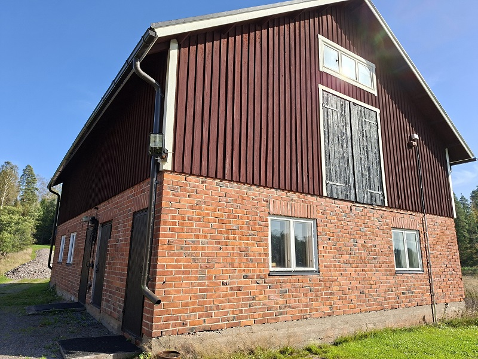
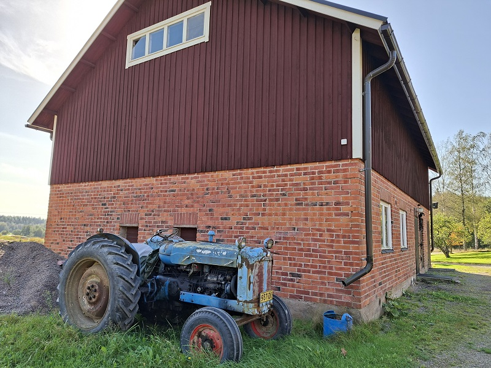

About Us
The organization promotes the rights of the Jewish minority in Europe and raises awareness of Jewish cultural heritage. Since 2022, it has been providing aid to Jewish people living in the midst of the war in Ukraine. The organization’s core ideology is to provide humanitarian assistance to Jewish minorities in various European countries.
The purpose of the association is to promote awareness of Jewish culture and to offer ideological and financial support to individuals relocating to the State of Israel, as well as to organizations that assist them. To achieve this purpose, the association may organize meetings, celebrations, presentations, and other educational events, engage in informational activities promoting Israel, arrange familiarization and study trips for its members, and provide assistance in communications with both Finnish and Israeli authorities.
To support its activities, the association may accept donations and bequests, own real estate and movable property necessary for its operations, operate a café, organize public events including those subject to a fee, organize lotteries and fundraisers after obtaining the necessary permissions, and receive and distribute humanitarian aid.

